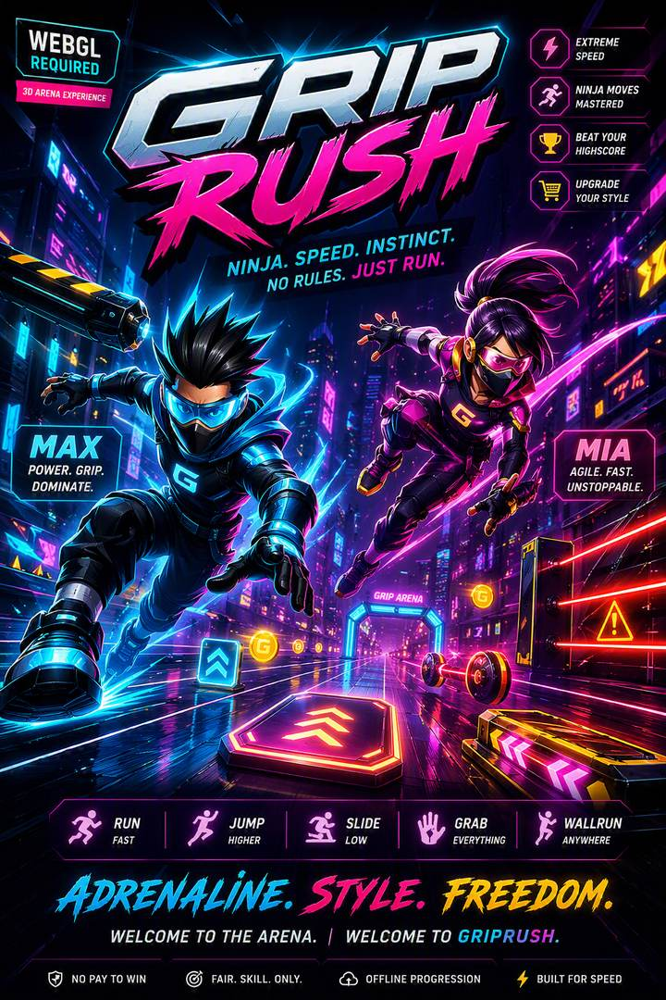
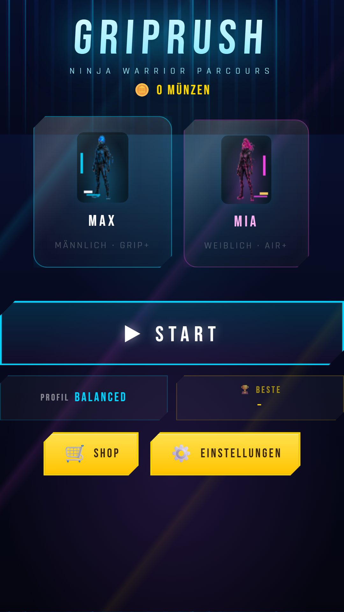
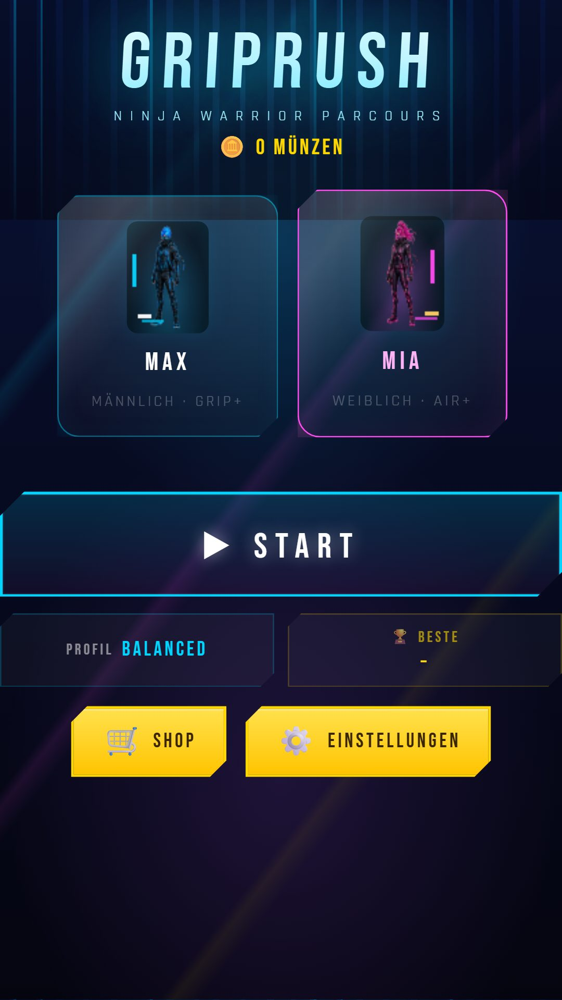
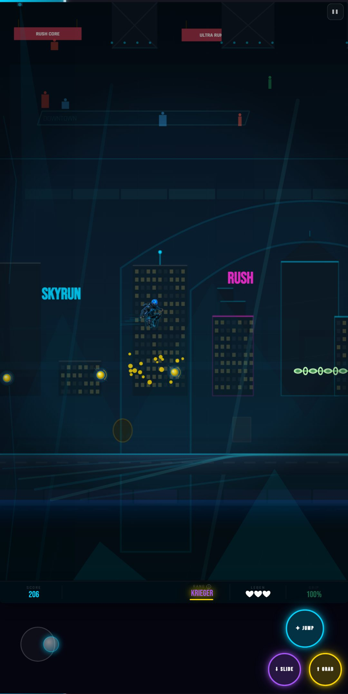
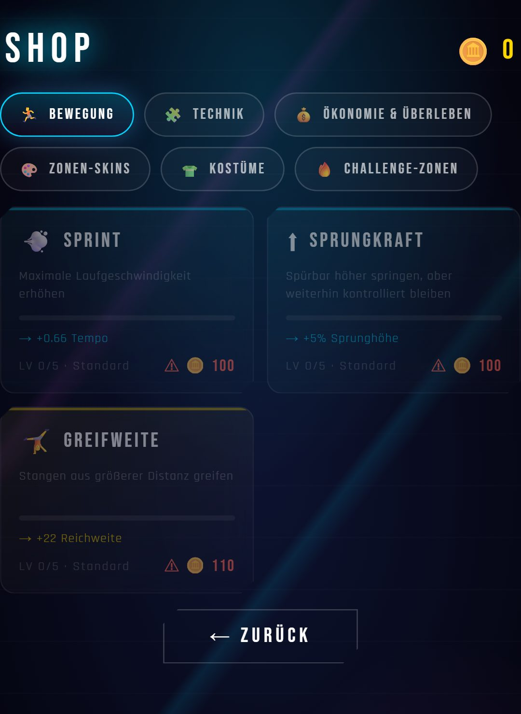

Über mich
Ich bin Baumix, ein unabhängiger Indie-Entwickler für
mobile Spiele.
Meine Spiele: GripRush · Evo Command
GripRush
GripRush ist ein rasanter Endless-Runner im
Neon-Cyberpunk-Stil: Spring, slide und grinde durch ein pulsierendes
Parkour-Setting, weiche Hindernissen im letzten Moment aus und jage
immer neue Highscores.
Status: GripRush befindet sich aktuell in aktiver Entwicklung und
ist seit v1.17.8 als offizieller Produktions-Release im Google Play Store
verfügbar - für Smartphones, Tablets und Android TV.
GripRush auf Google Play ansehen





Was ist neu?
Ein Auszug aus den letzten Updates (v1.9–v1.17.8):
- Android TV: eigenes TV-Banner und -Symbol, Steuerung per Fernbedienung/D-Pad und Gamepad (v1.17.8)
- Auto-Run als Standard für neue Spieler, Android-Zurück-Taste im Spiel, weniger Ruckeln auf 90/120-Hz-Displays (v1.17.6)
- Freischaltbare Kostüme für MAX und MIA (v1.17.2)
- Erster Produktions-Release: GripRush ist offiziell aus der Beta-Phase raus
- Hintergrundmusik & SFX: Menü-Loop plus drei rotierende Run-Tracks, Musik und Soundeffekte getrennt regelbar
- Grafik-Modernisierung: Neon-Skyline-Hintergründe in Menü und Ingame-Szene, überarbeitete Charakter-Sprites für MAX und MIA
- Neue Gameplay-Mechanik: zerbrechliche Hangel-Stangen sorgen für spürbaren Unterschied zwischen Bar-Typen
- Freischaltbare Zonen-Skins und knackige Challenge-Zonen (Rooftop, Industrial) für erfahrene Runner
- Vollständige DE/EN-Sprachumschaltung in Menü, HUD, Tutorial und Shop
- Diverse Landscape-/Layout-Fixes (HUD-Sichtbarkeit, Shop-Zentrierung) und Stabilitätsverbesserungen
- Zahlreiche kleinere Fixes aus dem Feedback unserer Tester
Evo Command
Evo Command ist ein schnelles Echtzeitstrategiespiel mit
Gebietskontrolle: Erobere Sektoren, schalte neue Körperteile frei und
baue aus Rumpf und Teilen deine eigenen Kreaturen und Roboter. Deine
Veteranen steigen auf, wählen Mutationen und vererben sie auf den Bauplan.
Status: Evo Command ist in Entwicklung und läuft als Testversion
auf Android. Die Veröffentlichung im Google Play Store ist geplant.
Worum geht es?
- Erobern: Wer mehr Sektoren hält, verdient mehr und produziert schneller
- Baukasten: Kombiniere einen Rumpf mit Beinen, Klauen, Raketenarmen, Flügeln, Panzerplatten und Sensoren - Gewicht und Tempo sind ein Kompromiss
- Evolution: Veteranen wählen Mutationen, die sich auf den Bauplan vererben
- Taktik: Nebel des Krieges, Aufklärung und Kontern - gewinnen kann, wer den Gegner liest
- Kurze Partien von etwa 10 bis 20 Minuten gegen eine KI mit mehreren Schwierigkeitsstufen, die sich an dich anpasst
- Karten in verschiedenen Formen und Größen, Tutorial, Deutsch und Englisch
- Läuft komplett offline, ohne Konto und ohne Tracking
- In Planung: Mehrspieler im lokalen Netzwerk (ein Host, die anderen treten bei), ohne Online-Server
Datenschutzerklärung: Evo Command
Hinweis zu KI
Teile der Grafiken, Texte und des Programmcodes von GripRush, Evo Command und
dieser Website wurden mit Unterstützung von KI-Werkzeugen erstellt. Konzept,
Auswahl, Prüfung und Freigabe erfolgen durch mich als Entwickler.
Kontakt
wird geladen …
Datenschutz
Die Datenschutzerklärungen findest du hier:
GripRush · Evo Command.
About me
I'm Baumix, an independent indie developer of mobile
games.
My games: GripRush · Evo Command
GripRush
GripRush is a fast-paced endless runner set in a
neon cyberpunk world: jump, slide, and grind through a pulsing
parkour setting, dodge obstacles at the last second, and chase ever
higher scores.
Status: GripRush is currently in active development and, as of
v1.17.8, is available as an official production release on the Google Play
Store - for phones, tablets, and Android TV.
View GripRush on Google Play
What's new?
A few highlights from recent updates (v1.9–v1.17.8):
- Android TV: dedicated TV banner and icon, remote/D-pad and gamepad controls (v1.17.8)
- Auto-Run as the default for new players, Android back button in game, less stutter on 90/120 Hz displays (v1.17.6)
- Unlockable costumes for MAX and MIA (v1.17.2)
- First production release: GripRush has officially left the beta phase
- Background music & SFX: a looping menu track plus three rotating run tracks, with music and sound effects adjustable independently
- Graphics modernization: neon skyline backgrounds in the menu and in-game scene, reworked character sprites for MAX and MIA
- New gameplay mechanic: breakable hang bars make bar types feel noticeably different
- Unlockable zone skins and tough challenge zones (Rooftop, Industrial) for seasoned runners
- Full DE/EN language switching across menu, HUD, tutorial, and shop
- Various landscape/layout fixes (HUD visibility, shop centering) and stability improvements
- Various smaller fixes based on tester feedback
Evo Command
Evo Command is a fast real-time strategy game built
around territory control: capture sectors, unlock new body parts, and
assemble your own creatures and robots from a hull and parts. Your
veterans level up, choose mutations, and pass them on to the blueprint.
Status: Evo Command is in development and runs as a test version
on Android. A release on the Google Play Store is planned.
What is it about?
- Conquer: whoever holds more sectors earns more and produces faster
- Build: combine a hull with legs, claws, missile arms, wings, armor plates, and sensors - weight and speed are a trade-off
- Evolve: veterans choose mutations that are passed on to the blueprint
- Tactics: fog of war, scouting, and countering - victory goes to whoever reads the opponent
- Short matches of about 10 to 20 minutes against an AI with several difficulty levels that adapts to you
- Maps in different shapes and sizes, tutorial, German and English
- Runs completely offline, without an account and without tracking
- Planned: multiplayer on the local network (one host, the others join), without an online server
Privacy policy: Evo Command
AI notice
Parts of the graphics, texts, and program code of GripRush, Evo Command, and
this website were created with the help of AI tools. Concept, selection,
review, and approval are done by me as the developer.
Contact
loading …
Privacy
The privacy policies can be found here:
GripRush · Evo Command.